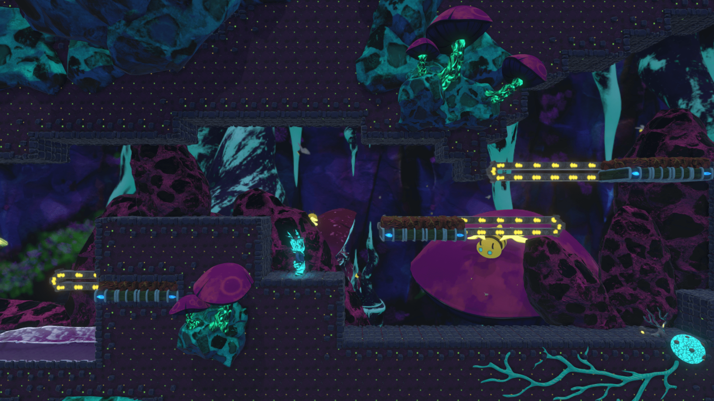
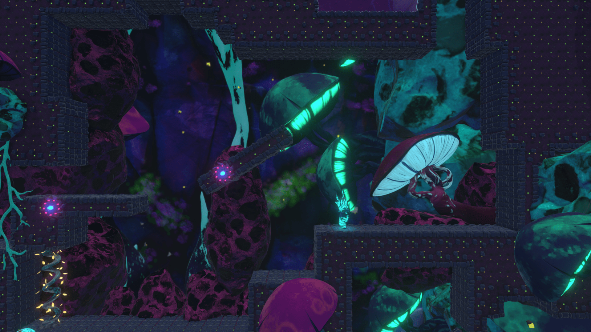
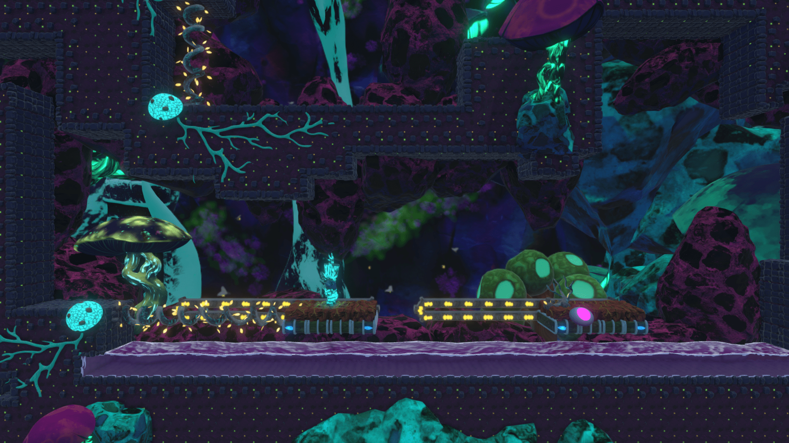
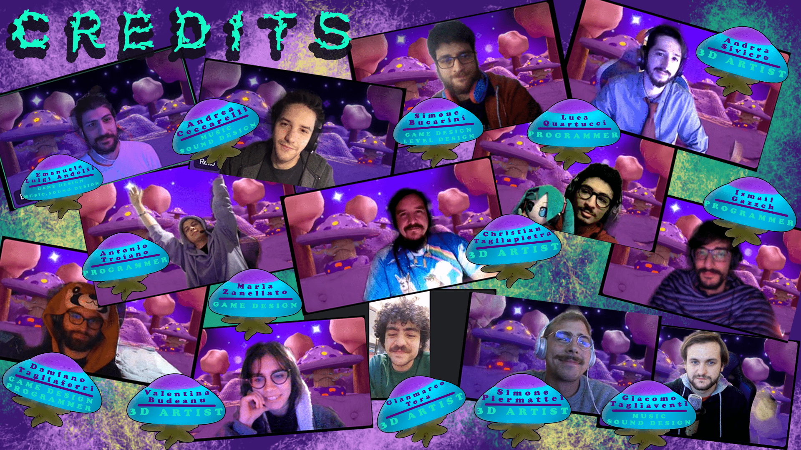
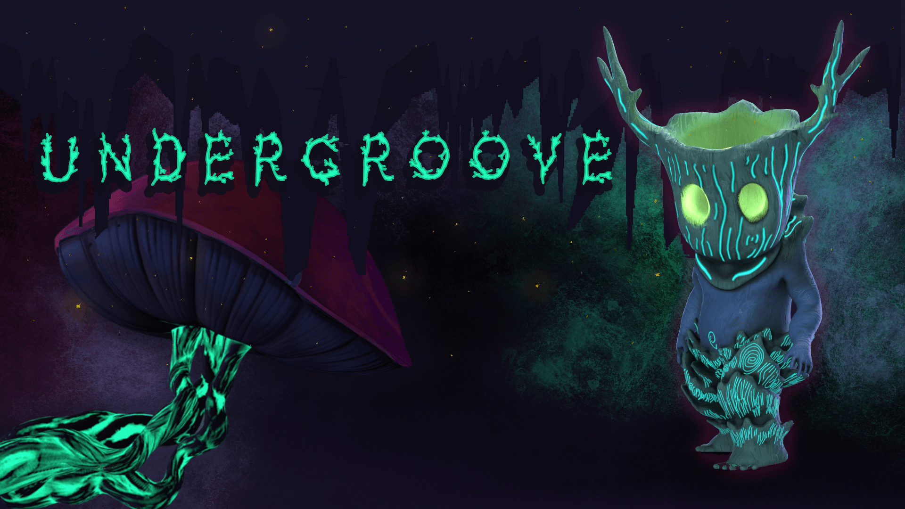

Global Game Jam 2023 — Tema: Roots
Undergroove
/Introduzione_Al_Gioco
Sotto la superficie, dove la luce è solo un ricordo e ogni parete pulsa al ritmo di una canzone, Undergroove è il nostro ingresso alla Global Game Jam 2023 sul tema Roots. Un puzzle-platformer in terza persona: muovi il personaggio, salti tra piattaforme che ruotano e usi il suono per far crescere o ritirare le radici che aprono il percorso.
«Grow» e «Shrink» non sono effetti decorativi: sono il cuore del level design. Una melodia allunga le radici; l'altra le richiama. Restare attaccato al terreno con Shift significa sopravvivere quando il mondo si capovolge sotto i piedi.
Il team era grande — game design, art, audio, level design — e in jam ogni ora conta. Io mi sono concentrato sul player: input, movimento, animazioni, collegamento alle radici, tutorial con icone tastiera/controller e alcuni asset di scena (shader di emissione, ape animata).
Credits itch.io: Damiano Tagliaferri, Emanuele Luigi Andolfi, Maria Zanellato, Simone Bucarini (design); Antonio Troiano, Damiano, Ismail Gazzeh, Luca Saladin Quartucci (development); art e audio come in pagina itch.
/Tecnologie_Usate
Unity
Engine della jam. Fisica 2D, piattaforme mobili, integrazione FMOD e scene di livello condivise in team.
C#
Logica del player, tutorial UI, hook verso ExtendableRoot e piattaforme rotanti.
Input System
PlayerControls.: tastiera, mouse, Xbox e Switch Pro con switch dinamico degli overlay.
Animator
State machine idle, corsa, rotazione 180°, salto e stick — parametri ancora usati nel build finale.
Shader Graph
Materiale emissivo legato alla «canzone» per far rispondere visivamente l'ambiente al gameplay musicale.
/Comparto_Tecnico
Quello che segue è ciò che ho introdotto durante la jam e che è rimasto nel gioco pubblicato
(o nel contratto tra script e animator). Dopo la jam Damiano ha rifinito ground check, coyote time,
audio e parte del FixedUpdate: lo segnalo nelle didascalie, senza prendere merito altrui.
Input e switch tastiera / gamepad
if (context.control.device is Keyboard && isController) {
isController = false;
GameManager.KeyboardOrController.Invoke(isController);
} else if (context.control.device is Gamepad && !isController) {
isController = true;
GameManager.KeyboardOrController.Invoke(isController);
}
}
// Player.cs — evento condiviso con TutorialBox per aggiornare le icone in gioco.
Canzoni Grow / Shrink e radici
wavesVFX.Play(songRadius, songDuration);
var hits = Physics2D.CircleCastAll(transform.position, songRadius, transform.forward, 0, plantMask);
foreach (var ray in hits) {
var root = ray.collider.GetComponentInParent<ExtendableRoot>();
if (good) root.Ahead_Root(); else root.Retreat_Root();
}
}
// Player.cs — collegamento che ho messo io; la logica di estensione è in ExtendableRoot (Ismail).
Stick al terreno (piattaforme rotanti)
if (context.started && IsGrounded) {
under_platform = currentGround.GetComponentInParent<RotatingPlatform>().transform;
transform.SetParent(under_platform);
rb.simulated = false;
isSticking = true;
anim.SetBool(animIsSticking, isSticking);
}
// al rilascio: distacco, reset rotazione grafica, riattivazione rigidbody
}
// Player.cs — gesto di gioco mio; traduzione di «unstick» semplificata post-jam da Damiano.
Contratto Animator
const string animRotation = "Rotation";
const string animRotationDirection = "RotationDirection";
const string animIsSticking = "IsSticking";
const string animJumpStart = "JumpStart";
// Player.cs — nomi e transizioni definiti in jam; Player.controller ancora in repo.
Tutorial dinamico
controllerButton.SetActive(isController);
keyboardButton.SetActive(!isController);
}
// TutorialBox.cs — prefab Tutorial_Sign e sprite dei tasti ancora nel progetto.
/Mie_Note_Sul_Progetto
La Global Game Jam 2023 è stata la mia prima jam con un team così ampio. Non avevo il lusso di esplorare tecnologie nuove: serviva un player giocabile in ore, non in giorni.
Ho costruito il controller da zero con il nuovo Input System, collegato le due canzoni alle radici, integrato stick e salto con l'Animator, e preparato il tutorial che si adatta se premi un tasto o un pad — incluso Switch Pro, in uno degli ultimi commit della jam.
— Antonio Troiano
/Screenshot




